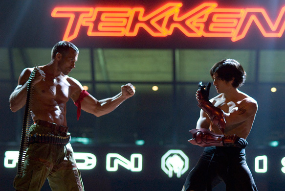

Date: 2009-03-20
Title: Tekken
Summary: A live-action film adaptation of the Tekken franchise set in a dystopian future where fighters compete in a deadly tournament.
Categories: Live-Action, Adaptation
Type: Movie
File Size: ~1.5–3 GB
Format: MP4 / MKV
Region: Global
Platform: Media Player / Streaming
Tekken (2009) is a live-action adaptation of the popular fighting game series. Set in a post-apocalyptic future controlled by powerful corporations, the story follows Jin Kazama as he enters the King of Iron Fist Tournament to seek revenge and fight for justice. The film features iconic characters from the Tekken universe, including Kazuya Mishima and Heihachi Mishima, reimagined in a darker, realistic setting. While it takes creative liberties compared to the games, it delivers action-packed fights and a cinematic take on the franchise.
Soon!